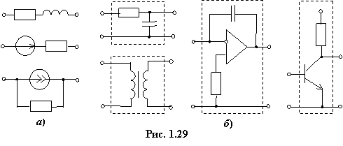

Выбор метода расчёта электрической цепи определяется топологией схемы цепи и характером входящих в неё активных (источников энергии) и пассивных (приёмников энергии) элементов.
По топологическим особенностям
электрические цепи подразделяют:
• на п р о с т ы е (одноконтурные (рис. 1.28а), двухузловые (рис. 1.28б)) и с л о ж н ы е (многоконтурные, многоузловые (рис. 1.28в); планарные (плоскостные) и объёмные);
• д в у х по л ю с н ы е, имеющие два внешних вывода (двухполюсники (рис. 1.29а)) и м н о г о п о л ю с н ы е, содержащие более двух внешних выводов (четырёхполюсники (рис. 1.29б), многополюсники).

По энергетическим свойствам и функциональной зависимости между напряжением и током в каждом элементе
электрической цепи различают:
• пассивные и активные.
П а с с и в н а я цепь не содержит активных элементов справа от полюсов
(зажимов) источника энергии, обычно располагаемого слева на схеме электрической
цепи. Усиление по мощности входного сигнала в ней невозможно. В а к т и в н о й
цепи, кроме основного источника энергии (сигнала), содержатся другие источники
энергии и активные элементы – транзисторы, тиристоры и др., в схемах замещения
которых имеются источники тока и/или источники напряжения. Активные цепи в определённых условиях способны усиливать входной сигнал по мощности за счёт потребления энергии от сторонних
источников энергии;